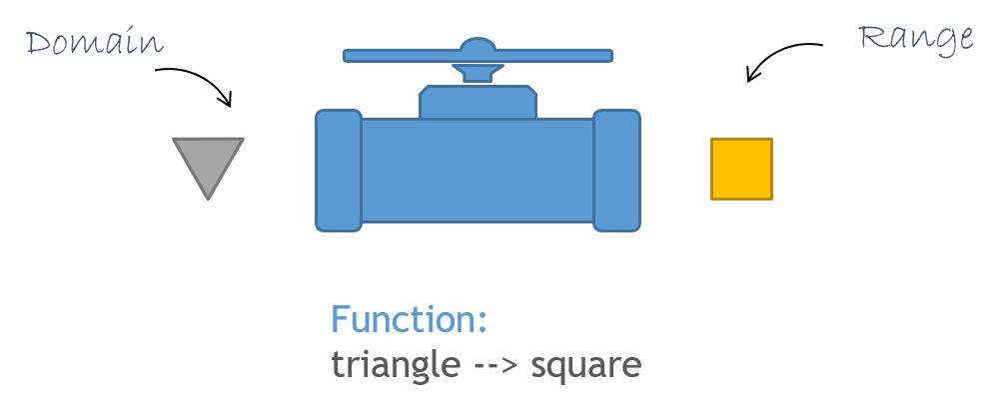
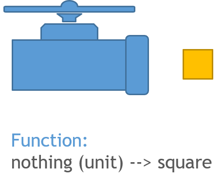
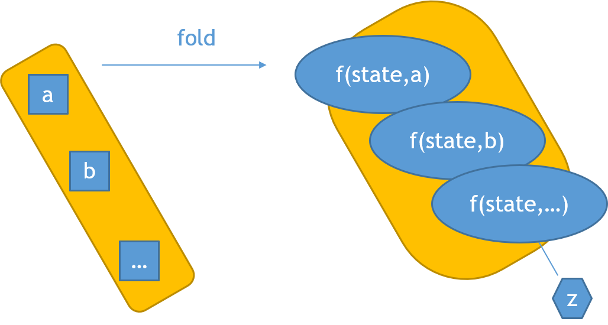

This notebook introduces the field of Systems Biology and explains why programming is a necessary skill to it. You will get a short introduction to the programming language F# and some links to resource for further studies.
The current challenges of Systems Biology approaches are mainly along four lines2,4:
(i) - system-wide quantification of transcriptome, proteome (including protein modifications) and metabolome
(ii) - identification of physical interactions between these components
(iii) - inference of structure, type and quantity of found interactions
(iv) - analysis and integration of the resulting large amounts of heterogeneous data. It becomes obvious that an interdisciplinary effort is needed to resolve these challenges in Systems Biology5. Here Biology dictates which analytical, experimental and computational methods are required.
Modern analytical methods to measure the identity and quantity of biomolecules system-wide, summarized under the term “quantitative omics”-technologies, address the first two mentioned challenges of Systems Biology. Among these “omics”-technologies are transcriptomics based on microarrays/next generation sequencing and proteomics/metabolomics based on mass-spectrometry.
Tying in with the area of genome sequencing, the focus is set on the accurate profiling of gene/protein expression and metabolite concentrations, as well as on the determination of biological protein modifications and of physical interactions between proteins.
Addressing the abovementioned challenges three and four of Systems Biology, the development of numerous computational approaches reaches out to unravel the intrinsic complexity of biological systems6. These computational approaches focus on knowledge discovery and on in silico simulation or modeling7. In the latter approach knowledge on a biological process is converted into a mathematical model. In silico simulations based on such a model can provide predictions that may subsequently be tested experimentally. Computation-based knowledge discovery (also known as data mining) aims to extract hidden patterns from complex and high-dimensional data to generate hypotheses. Therefore, the first step is to describe information on a biological system such that it is sustainably stored in a format rendering it readable and manipulable for machines and humans. The second step is to integrate the huge amount of differently structured data, often referred to as the “big data” challenge. In a last step, statistical or machine learning methods are applied to extract the information or underlying principles hidden in the data.
The most flexible way of working with huge amounts of data is using a lightweight programming language with a succinct syntax. Therefore, it becomes necessary that biologist become familiar with a suitable programming language to solve real world problems in (Systems) Biology.
F# (pronounced “F Sharp”) is a simple and expressive programming language. It can be described as statically typed impure functional language that supports functional, imperative and object-oriented paradigm and also several other programming styles including data-driven, event-driven and parallel programming. This makes it an excellent tool for introducing programming as well as programming paradigms.
F# is supported by the F# Software Foundation and a worldwide community of contributors. Microsoft and other companies develop professional tooling for F#. The F# Language Reference is a reference for the F# language, and the F# Guide covers general topics. There are lots of excellent F# learning resources available online.
To learn more about how to use Jupyter notebooks, see the Jupyter documentation and the Jupyter keyboard shortcuts. You can find more information baoutthe F# and Jupyter tooling locally using IfSharp.
With the help of the following FSharp coding information/examples, you will be able to solve all exercises in JP01_FsharpExcercises!
Let's start with our basic introduction:
The impetus behind functional programming comes from mathematics. Mathematical functions have a number of very nice features that functional languages try to emulate in the real world. So first, let’s start with a mathematical function that adds 1 to a number.
Add1(x) = x+1
What does this really mean? Well it seems pretty straightforward. It means that there is an operation that starts with a number, and adds one to it.
Let’s introduce some terminology:
A diagram of a general function would be:

Figure 2: diagram of a general functionThe process of using a name to represent a function or a value is called “binding“. A binding is done by using the let keyword in F#. Let’s look at the simple function we used previously:
let add1 x = x + 1
// evaluate
add1
val add1:
x: int
-> int
What does the “x” mean here? It means:
add1 5
// replace "x" with "5"
// add1 5 = 5 + 1 = 6
// result is 6
|
If you think about this a bit more, you will see that the name add1 itself is just a binding to the function that adds one to its input.
The function itself is independent of the name it is bound to. When you type let add1 x = x + 1 you are telling the F# compiler “every time you see the name add1,
replace it with the function that adds one to its input”. add1 is called a function value. To see that the function is independent of its name, try:
let plus1 = add1
add1 5 = plus1 5
|
You can see that add1 and plus1 are two names that refer ("bound to") to the same function. You can always identify a function value because its signature has the standard form domain -> range.
Here is a generic function value signature:
val functionName : domain -> range
Side note: Lambda expressions
In F# it is possible to use function without giving them a name and use the keyword fun instead and the = becomes ->.
This is called anonymous function, or - referring to lambda calculus - lambda expression. This kind of functions are often used for convenience. To write add1 as lambda expression:
fun x -> x + 1

Imagine an operation that always returned the integer 5 and didn’t have any input.
This would be a “constant” operation. How would we write this in F#? We want to tell the F# compiler “every time you see the name c, replace it with 5”. Here’s how:
let c = 5
// evaluate
c
|
There is no mapping arrow this time, just a single int. What’s new is an equals sign with the actual value printed after it. The F# compiler knows that this binding has a known value which it will always return, namely the value 5. In other words, we’ve just defined a constant, or in F# terms, a simple value.
Square brackets [] create a list with semicolon ; delimiters.
let twoToFive = [2; 3; 4; 5]
twoToFive
|
:: creates a list with a new element appended to the front of the list.
let oneToFive = 1::twoToFive
oneToFive
|
Square brackets with dashes [||] create an array with semicolon ; delimiters.
let oneToFour = [|1; 2; 3; 4|]
Elements can be accessed using dot .[i], where i is the (zero-based) index of the desired element
oneToFour.[0]
|
Note: commas are never used as delimiters in collection types, only semicolons!
The higher-order and polytypic function map applies a function working on the normal space to an elevated space.
This concept is so important that all collection types (lists, arrays, ...) have a build in map function.
Let's look at an example of what that means. Therefore, we first define a function working on the normal space:
map concept.
let square x = x * x
// evaluate
square 3
|
Now, let's apply this function to every number in a list.
List.map square [3;2;6;7]
|
Be aware, that this concept of mapping is restricted to the actual function called map. A filter function, for example, is also the same kind of operation.
let evens list =
let isEven x = x%2 = 0
List.filter isEven list
//isEven 5 // the value or constructor isEven is not defined. .. this is because it is only defined inside
// of the functional scope of `evens`.
Additionaly, you can see in this example how to define a multiline function. Just use indents! No ; needed.
Define isEven as an inner ("nested") function. In this case the function isEven is defined in the scope of the function evens. It cannot be accessed outside of this scope.
List.filter is a library function with two parameters: a predicate function, returning true or false depending on the input - and a list to work on.
evens [1..5]
|
You can use () to clarify precedence (think brackets in math). In this example, do List.map first, with two parameters. Then do List.sum on the result. List.map applies a function to all elements in the list.
let sumOfSquaresTo100 =
List.sum (List.map square [1..100])
sumOfSquaresTo100
|
Without the (), List.map would be passed as an parameter to List.sum.
|>The Pipe-forward operator lets you pass an intermediate result (value) onto the next function, it’s defined as:
let (|>) x f = f x
Now, you can pipe the output of one operation to the next using |>.
Here is the same sumOfSquares function written using pipes.
let sumOfSquaresTo100piped =
[1..100]
|> List.map square
|> List.sum
sumOfSquaresTo100piped
|
In this case one often uses anonymous functions using the fun keyword. This saves time to think about a name and the function can be writen inline.
let sumOfSquaresTo100withFun =
[1..100]
|> List.map (fun x -> x * x)
|> List.sum
sumOfSquaresTo100withFun
|
You already used the List.sum function. It is important to notice that this function doesn’t follow the map concept. There is a second related concept called fold. The higher-order and polytypic function fold applies a function working on the normal space to an elevated space and reduces the elevated space into the normal space. This results in an aggregation. A simple but concreate example would be to sum a list of numeric values.

Figure 4: A conceptual view of the `fold` concept.Control flow expressions are used to determine the program pathing under multiple possible conditions. These different paths must always lead to the same Type (e.g. string).
if-then-else is an expression and must return a value of a particular type.
It evaluates to a different value depending on the boolean expression given.
Both branches must return the same type!
let v = if true then "a" else "b"
v
|
Pattern matchings are one method to apply these control flow expressions. These function similiar to the if then else expression, but much more powerful.
let simplePatternMatch x =
match x with
| "a" -> printfn "input is a"
| "b" -> printfn "input is b"
| _ -> printfn "input is something else"
simplePatternMatch "a"
|
simplePatternMatch "I will not match"
|
In the following we will use a printfn function. Normally in FSharp only the last output is returned, but side effects, can always be returned. As a rule of thumb: All Unit outputs are side effects.
In this case, this means, we will print the result and still can keep working with the output.
Also you will notice, that the last output is only f (1=3) -> "b", but we still will get all other results, as we print them below.
let f x =
if x then
printfn "a";
"a"
else
printfn "b"
"b"
f false
|
f true
|
f (1=1)
|
f (1=3)
|
Tuple types are pairs, triples, and so on of values.
Tuples use commas , as delimiter.
let twoTuple = 1,2
twoTuple
|
let threeTuple = "a",2,true
threeTuple
|
Record types have named fields. They use Semicolons ; as separators.
type Person = {FirstName:string; LastName:string}
let person1 = {FirstName = "John"; LastName = "Doe"}
person1
|
Field of a record type can be acessed individually with a dot .Name
person1.FirstName
|
Sometimes it can be necessary to organize code for example to ship a library to other users. Namespaces und Modules are top-level and low-level constructs to organize code.
You can think of namespaces and modules as containers and sub containers, respectively, in which you can put function and type definitions. The hierarchy is defined that you can have multiple modules in one namespace, also nested modules in a module, but no namespace in another namespace. You can acces namespaces and modules with the . operator.
//Module “container”
module WidgetsModule =
let widgetName = "FSharp"
let widgetFunction x y =
sprintf "%s %s" x y
// printfn "%s %s" x y
// Calls the function from the module
WidgetsModule.widgetFunction "Hello" WidgetsModule.widgetName
|
Comments also help to write organized code.
Comments are text written in code area (often marked green) which will be ignored by the compiler and not be executed.
// single line comments use a double slash
( multi-line or in-line comments use `( . . . )` pair -end of multi line comment- )
type PersonalInformation =
{
//First name of a person
FirstName :string
//Last name of a person
LastName :string
(*Address and
phone number of a person*)
Address : (*int*) string
PhoneNumber: int
}